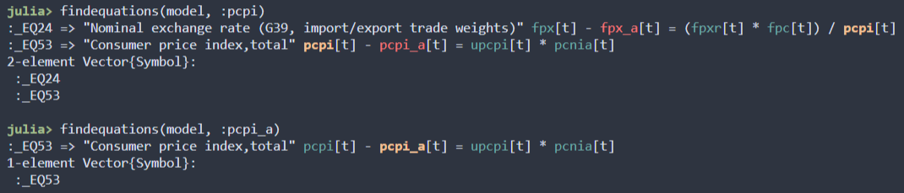

Equation Changing Syntax
This document covers the syntax for making modifications to an existing model held in memory.
A simple example
Given an existing model, m1, the following example creates a copy of the model with the addition/modification of the equation labeled :technology.
m2 = deepcopy(m1)
@equations m2 begin
:technology => log(A[t]) = λ * log(A[t-1]) + ea[t] + ea[t+1]
end
@reinitialize(m2)
sssolve!(m2; method=:auto)
check_sstate(m2)The above example follows these four steps.
- Make a copy of the model using
deepcopy. - Make changes to the model as required. This can be done in a series of
@variables,@logvariables,@neglogvariables,@steadystatevariables,@exogenous,@shocks,@autoexogenize,@steadystate, and@equationsblocks.- Note that new
@steadystatecriteria must be added after the call to@reinitialize.
- Note that new
- Reinitialize the model with
@reinitialize. Changes to an initialized model must always be completed with a call to@reinitialize. - Solve the steadystate of the model with
sssolve!.
Removing model properties
@delete can be used inside any of the model construction macros to remove an existing variable/equation/etc. When removing equations and steadystate equations, the equation key must be used (without the :). When removing autoexogenize pairs, the entire pair must be defined with an implication arrow (=>).
Example:
@equations m begin
@delete _EQ188 _EQ189
end
@variables m @delete c
@shocks m begin
@delete c_shk
end
@autoexogenize m begin
@delete A => ea
endThe @delete macro works at the level of the line within a block. This means that new variables can be defined in the same @variables block as the one which removes variables.
Example:
@variables model begin
@delete c
d; e; f
endDefining equations with keys
The arrow implication, => is used within the equations block to define a named key for the given equation. The key is optional. For example, the block below contains both named and unnamed equations.
@equations model begin
@log 1/(C[t]) = β * (1 / (C[t+1]*(1+g))) * (r[t+1]+1-δ)
@log (L[t])^γ = w[t] / C[t]
:rates => @log r[t] = α * A[t] * (K[t-1]/(1+g)) ^ (α-1) * (L[t]) ^ (1-α)
:wages => @log w[t] = (1-α) * A[t] * (K[t-1]/(1+g)) ^ α * (L[t]) ^ (-α)
K[t] + C[t] = A[t] * (K[t-1]/(1+g)) ^ α * (L[t]) ^ (1-α) + (1-δ) * (K[t-1]/(1+g))
:technology => log(A[t]) = λ * log(A[t-1]) + ea[t]
dlA[t] = log(A[t]) - log(A[t-1])
end # equationsEquations without an explicit key will receive one following an __EQ# template. For example, printing the equations from the above block would result in this output:
:_EQ1 => @log 1 / C[t] = β * ((1 / (C[t + 1] * (1 + g))) * ((r[t + 1] + 1) - δ))
:_EQ2 => @log L[t] ^ γ = w[t] / C[t]
:rates => @log r[t] = α * (A[t] * ((K[t - 1] / (1 + g)) ^ (α - 1) * L[t] ^ (1 - α)))
:wages => @log w[t] = (1 - α) * (A[t] * ((K[t - 1] / (1 + g)) ^ α * L[t] ^ -α))
:_EQ5 => K[t] + C[t] = A[t] * ((K[t - 1] / (1 + g)) ^ α * L[t] ^ (1 - α)) + (1 - δ) * (K[t - 1] / (1 + g))
:technology => log(A[t]) = λ * log(A[t - 1]) + ea[t]
:_EQ7 => dlA[t] = log(A[t]) - log(A[t - 1])When running an @equations macro on and exitsting model, all unnamed equations are added to the model. Named equations will replace existing equations with the same name, if any, and will be added otherwise.
Finding equation keys
Equation keys are automatically assigned to equations without an explicit key. The findequations(model, symbol) function can be used to find the keys for the equations in the model which contain the given symbol.
.